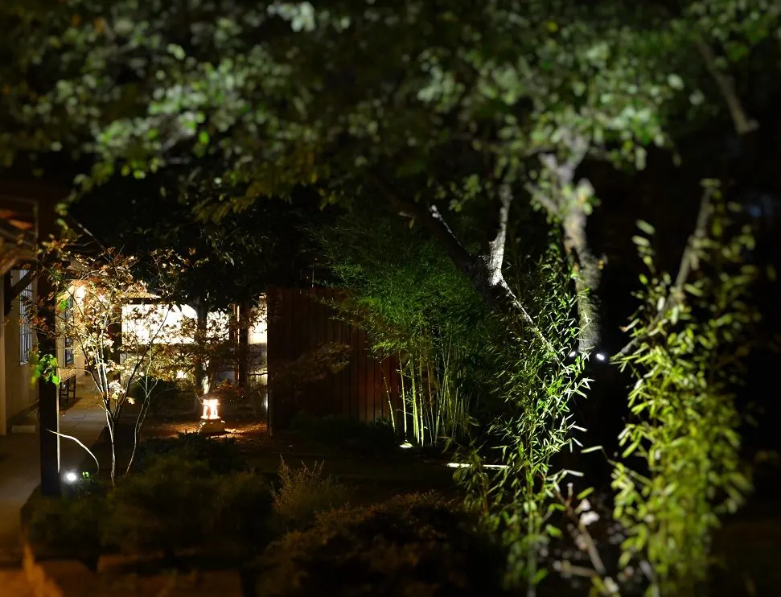

Dove siamo
Il Dojo ti aspetta
- Il Dojo
- Via Cicalesi 24284014 Nocera Inferiore (Salerno) · Sede operativa
- Telefono
- 320 879 2923
- Orari
- Per giorni e orari dei corsi scrivici o chiamaci.
- Social
- Sede legale
- Via G. Pascoli 9684014 Nocera Inferiore (Salerno)
Via Cicalesi 242, Nocera Inferiore
Apri in Google Maps